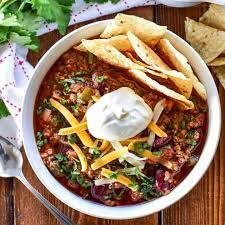

Chili

Papa's Chili con Carne
Chunky beef chili simmered with ancho and poblano chili powder and
soft tender pinto beans from the frontier.
Ingredients:
- 16 oz Ground beef
- 24 oz Canned tomatoes
- 24 oz Pinto beans, cooked
- 8 oz Chicken or vegetable broth
- 3 oz Ancho chili powder
- 2 oz Poblano chili powder
- 3 Tablespoons dried oregano
- 1.5 Tablespoons ground cumin
- 1 Tablespoon corn flour "masa harina"
- Salt and pepper
Steps:
- Sear beef in heavy cast iron pot until browned
- Add chili powder and spices, cook 2 minutes
- Add tomatoes, broth and beans
- Simmer for 1 hour or until thickened
- Season with salt and pepper and stir in corn flour to thicken